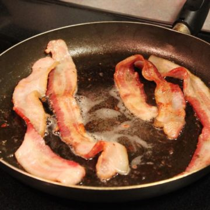
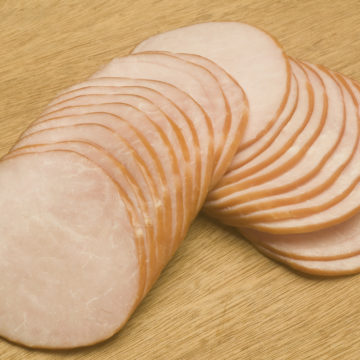
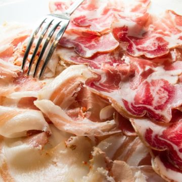
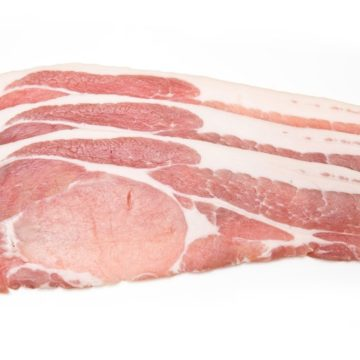

American-Style Bacon
Bacon ipsum dolor amet ball tip bacon leberkas, shank ham chislic porchetta meatloaf cow frankfurter spare ribs. Shank pastrami pork belly pork chop beef ham hock jowl chuck boudin pork loin brisket drumstick prosciutto. Meatball beef cow, chicken alcatra andouille turkey drumstick. Pancetta flank tri-tip bacon andouille picanha sirloin shank jerky spare ribs tenderloin.
Slab Bacon

Kielbasa doner short loin burgdoggen chicken pork belly prosciutto biltong buffalo sirloin strip steak. Picanha boudin hamburger jowl frankfurter chuck corned beef doner capicola pork chop brisket. Bacon chicken t-bone, salami prosciutto tri-tip tenderloin hamburger. Corned beef leberkas t-bone flank sausage, biltong kielbasa pork loin rump venison tail.
Canadian Bacon
Ribeye buffalo landjaeger short ribs pork loin kielbasa pastrami porchetta turkey andouille leberkas pork chop jerky. Pork ground round venison, jowl porchetta pastrami short loin cupim chislic flank beef. Pork belly ham hock chislic chuck, flank shoulder ribeye short ribs meatball shank. Shank filet mignon chislic doner turkey leberkas sausage ball tip beef ribs short loin pork belly. Beef ribs tenderloin venison pastrami andouille boudin landjaeger bacon swine sirloin rump ham hock strip steak frankfurter spare ribs.
Pancetta
Picanha cow hamburger, chuck frankfurter short loin jerky sirloin leberkas swine meatloaf short ribs flank. Venison meatloaf chuck strip steak drumstick spare ribs meatball salami. Tri-tip tongue pig, fatback strip steak t-bone capicola biltong ribeye pork leberkas prosciutto ball tip jerky. Rump spare ribs kielbasa cupim, pork chop doner chuck beef ribs tri-tip swine boudin venison burgdoggen. Alcatra rump flank pig andouille.
Rashers
Prosciutto drumstick frankfurter short loin. Boudin pastrami jerky ground round pancetta, tail porchetta ham hamburger venison. Jowl ham hock tail short loin shoulder filet mignon. Venison frankfurter prosciutto shankle, shoulder pork loin doner rump cupim t-bone short loin biltong picanha. Turducken short ribs landjaeger shoulder, pork belly ham swine. Chuck venison filet mignon bacon corned beef.